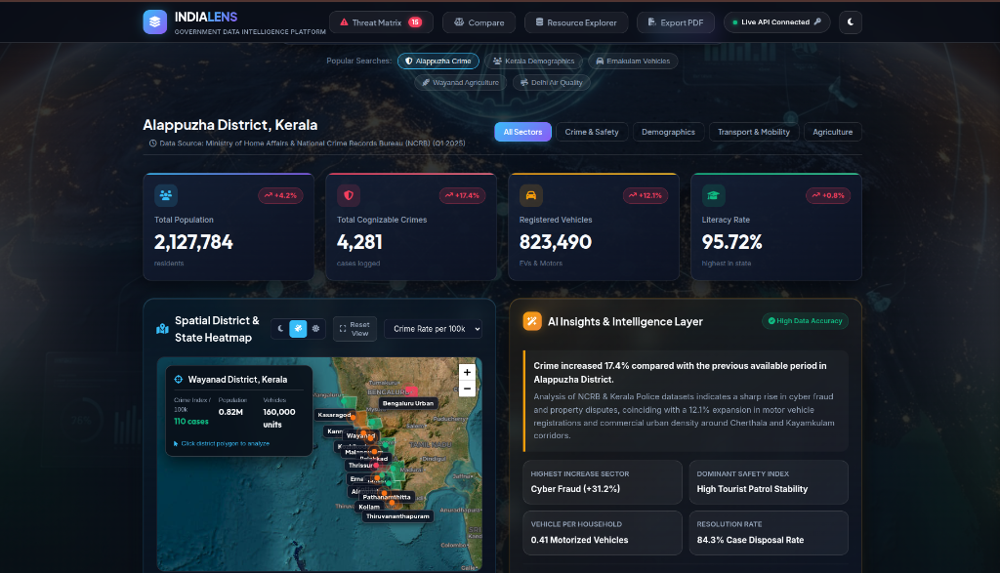
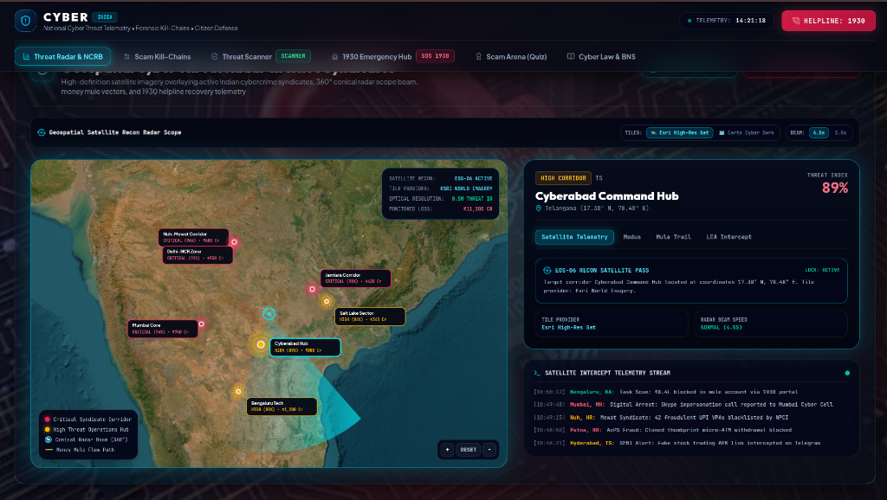
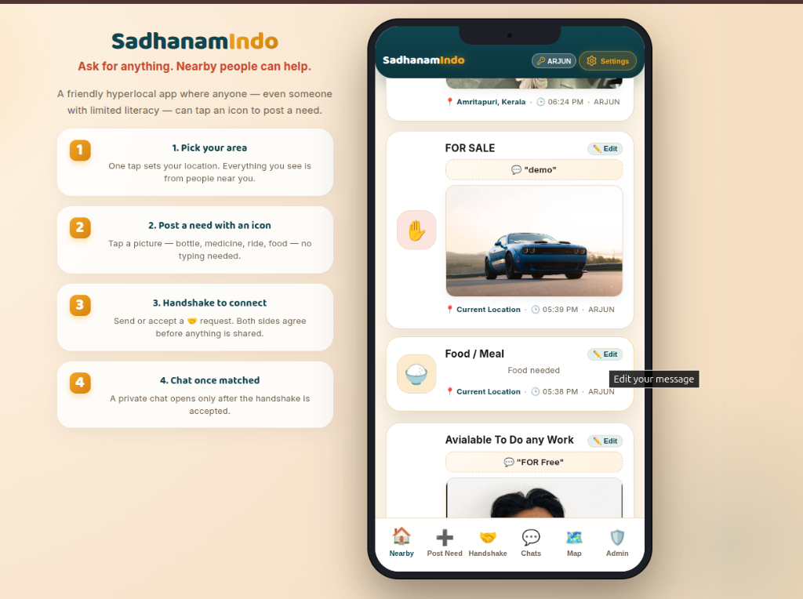
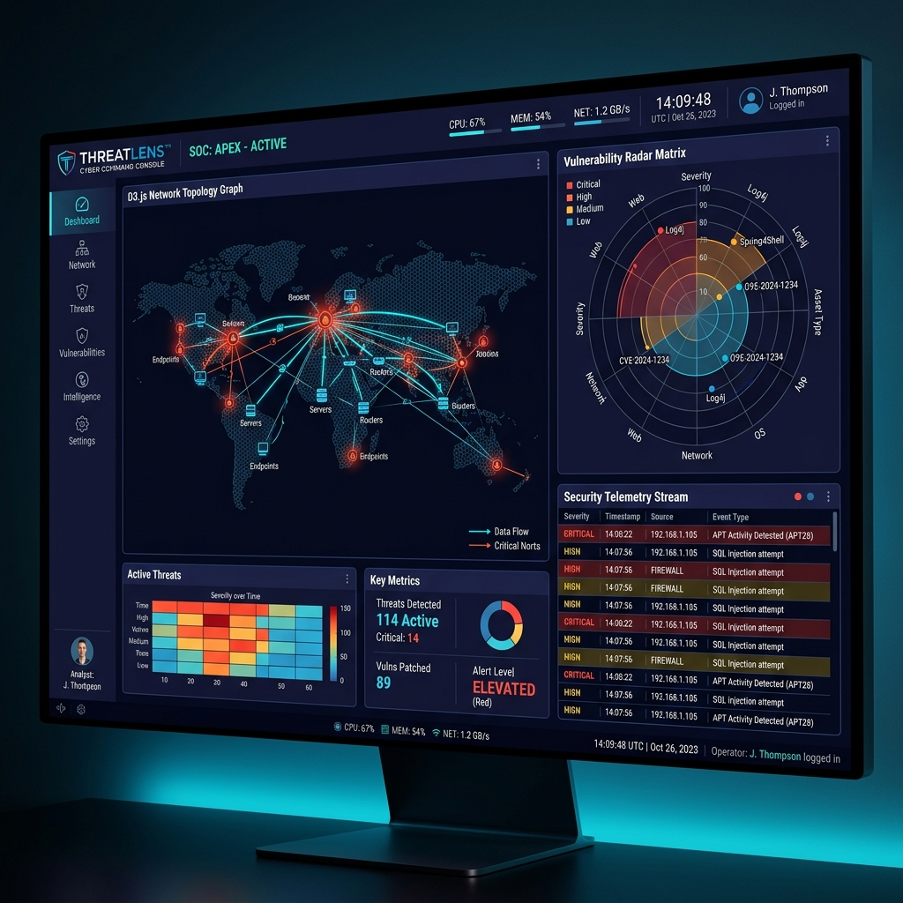
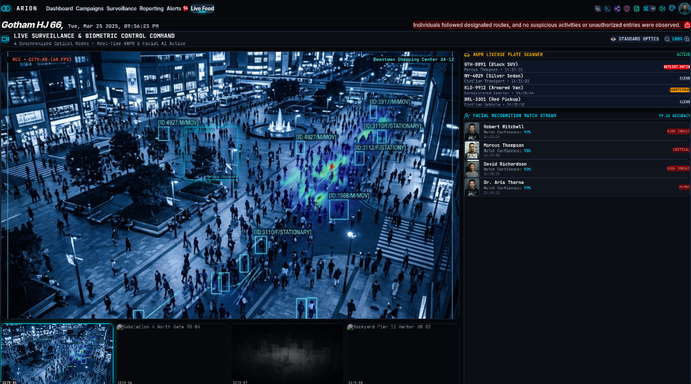
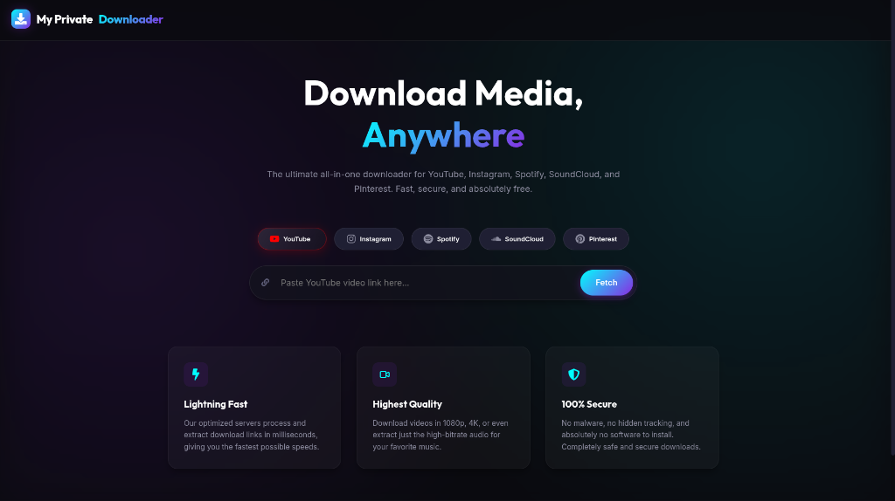
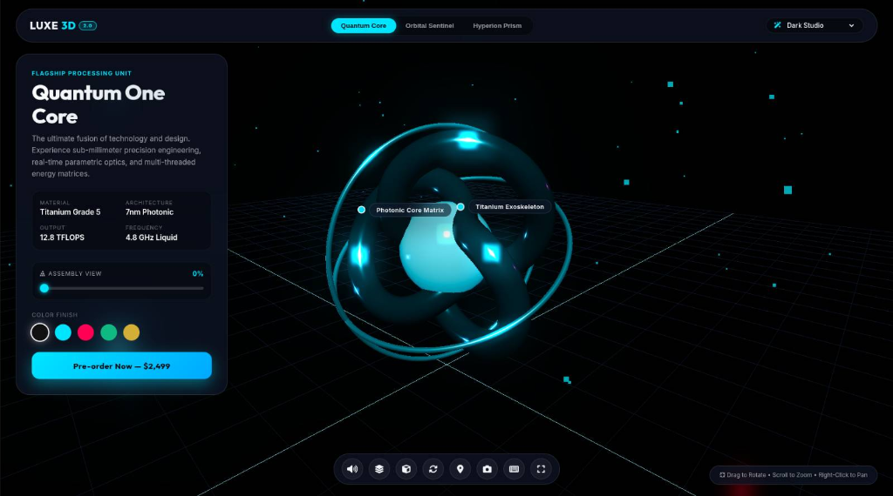

Engineering Outputs & Repositories
A showcase of enterprise data dashboards, visualization tools, multi-threaded plugins, and responsive web applications built with modern front-end tech.

🇮🇳 IndiaLens — Government Data Intelligence Platform
Interactive open data visualization & governance intelligence platform synthesizing public administration data into Leaflet spatial heatmaps, dual-region policy benchmarks, threat matrices, and predictive AI analytics.

🇮🇳 Cyber Crimes & Threat Intelligence India
Interactive open cyber defense & threat telemetry platform synthesizing NCRB crime stats, 5-stage scam kill-chains, heuristic SMS/URL/UPI scanner, Golden Hour 1930 incident triage, and IT Act/BNS legal provisions.

Sadhnam Indo — P2P Mutual Aid
Real-time privacy-focused hyperlocal community platform featuring 2-step handshakes, client-side AES encrypted chat, Leaflet maps, PWA, and 5-language support.

ThreatLens — Cyber Console
Enterprise SOC command console for passive OSINT reconnaissance with 12 specialized modules, D3 force-directed network topology graph, and live risk remediation modeling.

ARION — C4ISR Command Suite
Military-grade tactical intelligence SPA featuring 3D globe with trajectory arcs, hands-free Web Speech AI voice controls, suspect network graph, 4-camera CCTV matrix, and Cyber CLI.

VortexDL — Media Downloader
Zero-disk-space media extractor streaming videos directly via Node.js stdout pipes (`child.stdout.pipe(res)`), embedded `yt-dlp` CLI binary, and social failover mirrors.
Network Analysis Dashboard
Enterprise cluster network visualization powered by ForceAtlas2 graph layouts, dynamic node inspection, and state preservation.
Traffic Analytics Hub
High-throughput real-time telemetry monitoring system built with custom dynamic visualizations and live WebSockets.

Luxe3D Quantum One — Interactive 3D Showcase
Interactive 3D product configurator featuring real-time parametric optics, WebGL shader lighting, camera orbit controls, synthesized Web Audio, and glassmorphic UI overlay.
SVG Convert — Figma Plugin
Offline-first vectorization plugin with vendored ImageTracerJS engine, tabbed UI, and custom palette extraction.